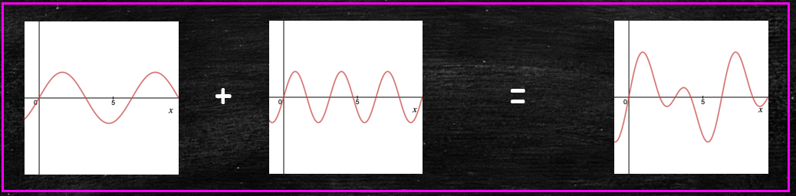
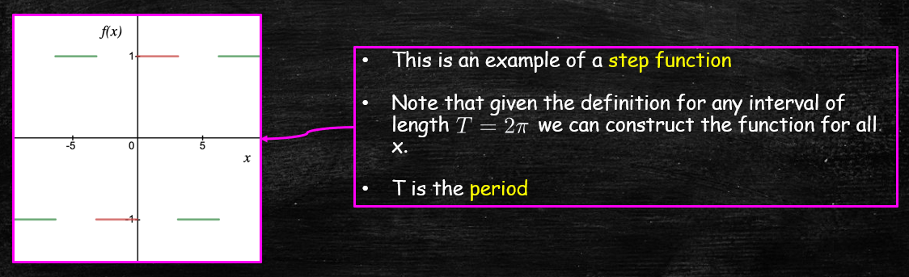

Jonathan Crofts
Nottingham Trent University
$f$ is a periodic function if there is an $a>0$ such that
\[ f(x+a) = f(x) \quad \forall x\in\mathbb{R} \]If this is the case then $a$ is called a period of $f$
If $f, g$ are periodic functions with period $a$, then:
$f,g$ are also periodic functions with period $na, n\in\mathbb{N}$
For any $\alpha, \beta\in \mathbb{R}$, $\alpha f+\beta g$ is periodic with period $a$
$f\cdot g$ is periodic with period $a$
For any $\lambda>0$, $f(\lambda x)$ is periodic with period $a/\lambda$
For any $\alpha\in \mathbb{R}$
\[ \color{white}{\boxed{ \int_0^a f(x)\mathrm{d}x = \int_\alpha^{\alpha+a}f(x)\mathrm{d}x }} \]Assuming $\alpha< a$
\[ \begin{align*} \int_\alpha^{\alpha+a}f(x)\mathrm{d}x &= \int_\alpha^a f(x)\mathrm{d}x+\int_{a}^{\alpha+a}f(x)\mathrm{d}x\\ &=\int_\alpha^a f(x)\mathrm{d}x+\int_0^\alpha f(y+a)\mathrm{d}y \\ &=\int_\alpha^a f(x)\mathrm{d}x+\int_0^\alpha f(y)\mathrm{d}y \\ &= \int_0^af(x)\mathrm{d}x \quad\text{as required} \end{align*} \]The third line follows since $f(y+a)=f(y)$ i.e. $f$ is periodic with period $a$
Algebraicly $f$ is even if and only if $f(-x)=f(x)$ for all $x$ in the domain of $f$
Geometrically, a function $f(x)$ is even if it admits reflective symmetry about the $y$-axis
Some familiar examples include ...
Algebraicly $f$ is odd if and only if $f(-x)=-f(x)$ for all $x$ in the domain of $f$
Geometrically, a function $f(x)$ is odd if it admits rotational symmetry with respect to the origin
Some familiar examples include ...
The following properties of even/odd functions will be important for us
the product of two even or two odd functions is even
the product of an odd and even function is odd
Let $f, g$ be two even functions and let $h(x) = f(x)g(x)$ be their product. Then
\[ h(-x) = f(-x)g(-x) = f(x)g(x) = h(x) \]proving the result
The remaining are proved similarlyThe integrals of even and odd functions over symmetric intervals about the origin simplify considerably
As alluded to in the illustration, for even functions we have
$\color{#00FF00}{\boxed{\color{white}{\int_{-L}^Lf(x)\mathrm{d}x = 2\int_0^L f(x)\mathrm{d}x}}}$See the video to the right for an
illustration of
this important property
The integrals of even and odd functions over symmetric intervals about the origin simplify considerably
As alluded to in the illustration, for odd functions we have
$\color{#00FF00}{\boxed{\color{white}{\int_{-L}^Lf(x)\mathrm{d}x = 0}}}$See the video to the right for an
illustration of
tphis important property
It should not be too hard to convince yourself that the function
\[u(x,t)=\sin(k(x-ct))\]is a solution to the wave equation
\[\frac{\partial^2 u}{\partial t^2} = c^2\frac{\partial^2 u}{\partial x^2}\]Now since the wave equation is linear the sum of two (or more) solutions is also a solution i.e....
Joseph Fourier asked the question of whether all periodic functions could be written as a sum of sines and cosines.
Perhaps surprisingly, the answer was yes. At least for the types of functions that arise in practice.
In fact he found that $2\pi$-periodic functions can be written as
\[ \color{#00FF00}{\boxed{\color{white}{ f(x)\sim \frac{a_0}{2} + \sum_{n=1}^\infty \left(a_n\cos(nx)+b_n\sin(nx)\right)}}} \]If such a series exists then the coefficients $a_0, a_n$ and $b_n$ are given by the so-called Euler integrals
\[ \color{red}{\boxed{\color{white}{ a_n = \frac{1}{\pi}\int_{-\pi}^\pi f(x)\cos(x)\mathrm{d}x~ \text{ and }~ b_n = \frac{1}{\pi}\int_{-\pi}^\pi f(x)\sin(x)\mathrm{d}x }}} \]That is, if the function $f(x)$ is $2\pi$-periodic, then it can be written as a Fourier series
\[ \color{red}{\boxed{\color{white}{ f(x)\sim \frac{a_0}{2} + \sum_{n=1}^\infty \left(a_n\cos(nx)+b_n\sin(nx)\right)}}} \]with coefficients given by the above integrals
To see where the Euler integrals come from let us assume that the FS over page converges.
Then we can multiply both sides of the equation by $\cos(mx)$ and integrate between $-\pi$ and $\pi$ to obtain
\[ \begin{align}\nonumber \int_{-\pi}^\pi f(x)\cos(mx)\mathrm{d}x &= \frac{a_0}{2}\int_{-\pi}^\pi\cos(mx)\mathrm{d}x + \\\nonumber &\sum_{n=1}^\infty\left(a_n\int_{-\pi}^\pi f(x)\cos(nx)\cos(mx)\mathrm{d}x\right.+\\ &\left. b_n\int_{-\pi}^\pi f(x)\sin(nx)\cos(mx)\mathrm{d}x\right) \end{align} \]Using the following properties
\[ \color{#00FF00}{\boxed{\color{white}{ \begin{align*} \int_{-\pi}^\pi\sin(nx)\cos(mx)\mathrm{d}x&=0, \forall m,n\in\mathbb{N}\\ \int_{-\pi}^\pi\cos(nx)\cos(mx)\mathrm{d}x&=\begin{cases}\pi, &n=m\\0&\text{otherwise}\end{cases} \end{align*} }}} \]Thus, Equation (1) reduces to
\[ \begin{align*} \int_{-\pi}^\pi f(x)\cos(mx)\mathrm{d}x &= \sum_{n=1}^\infty a_n\pi\delta_{n,m}\\ &= a_m\pi \implies \color{red}{\boxed{\color{white}{a_m = \frac{1}{\pi}\int_{-\pi}^\pi f(x)\cos(mx)\mathrm{d}x}}} \end{align*} \]The above result was for $n\neq 0$.
In the case $n=0$ we simply integrate both sides of the FS equation as follows
\[ \begin{align*} \int_{-\pi}^\pi f(x)\mathrm{d}x &= \frac{a_0}{2}\int_{-\pi}^\pi\mathrm{d}x + \sum_{n=1}^\infty\left(a_n\int_{-\pi}^\pi \cos(nx)\mathrm{d}x + \right.\\ &\left.b_n\int_{-\pi}^\pi \sin(nx)\mathrm{d}x\right)\\ &=a_0\pi\implies \color{red}{\boxed{\color{white}{a_0 = \frac{1}{\pi}\int_{-\pi}^\pi f(x)\mathrm{d}x}}} \end{align*} \]We can work out $b_n$ similarly (except we multiply by $\sin(mx)$)
Compute the Fourier series of the function
\[ f(x) = \begin{cases}1&x\in[0,\pi)\\-1 & x\in[-\pi,0)\end{cases} \]such that $\displaystyle f(x)=f(x+2\pi)$ outside of $(-\pi,\pi)$
Computing $\color{red}{\boxed{\color{white}{\displaystyle a_n = \int_{-\pi}^\pi f(x)\cos(nx)\mathrm{d}x ~~n=0,1,2,\ldots}}}$
Since $f(x)$ is odd we have that
\[ a_0 = \frac{1}{\pi}\int_{-\pi}^\pi f(x)\mathrm{d}x = 0 \]Also
\[ a_n = \frac{1}{\pi}\int_{-\pi}^\pi f(x)\cos(nx)\mathrm{d}x = 0 \]This holds since $f(x)\cos(nx)$ is odd being the product of an odd and even function
Computing $\color{red}{\boxed{\color{white}{\displaystyle b_n = \frac{1}{\pi}\int_{-\pi}^\pi f(x)\sin(nx)\mathrm{d}x}}}$
We have
\[ \begin{align*} \frac{1}{\pi}\int_{-\pi}^\pi f(x)\sin(nx)\mathrm{d}x&= \frac{2}{\pi}\int_0^\pi f(x)\sin(nx)\mathrm{d}x\\ &= \frac{2}{\pi}\int_0^\pi \sin(nx)\mathrm{d}x\\ &= \frac{2}{\pi}\Big[-\frac{1}{n}\cos(nx)~\Big]_0^\pi\\ &= \frac{2}{n\pi}\left(1-(-1)^n\right) \Big(= b_n\Big) \end{align*} \]Putting this all together
\[ \color{red}{\boxed{\color{white}{ a_0=a_n=0 \text{ and } b_n= \frac{2}{n\pi}\left(1-(-1)^n\right)}}} \]so that the FS of our function is given by
\[ \color{#00FF00}{\boxed{\color{white}{ \begin{align*} f(x)&\sim \frac{a_0}{2}+\sum_{n=1}^\infty \left(a_n\cos(nx)+b_n\sin(nx)\right)\\ &=\sum_{n=1}^\infty \frac{2}{n\pi}\left(1-(-1)^n\right)\sin(nx) \end{align*} }}} \]Since only sine terms arise in this series we call it a Fourier sine series
The above plot shows the partial sums (for $n=5, 10$ and $100$ terms) for the FS computed over page
Interestingly, we can use the result
\[\color{red}{\boxed{\color{white}{ f(x) \sim\sum_{n=1}^\infty \frac{2}{n\pi}\left(1-(-1)^n\right)\sin(nx)}}}\]to get an approximation to $\pi$
Evaluating $f$ at $\pi/2$ gives
\[ f\left(\frac{\pi}{2}\right) = 1 = \frac{2}{\pi}\left(1-\frac{1}{3}+\frac{1}{5}-\cdots\right) \]so that
\[ \pi = 4-\frac{4}{3}+\frac{4}{5}-\frac{4}{7}\cdots \]The above plot shows our approximation to $\pi$ for increasing $n$